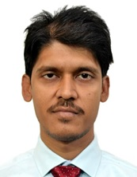

AIoT (Artificial Intelligence of Things)
IIoT (Industrial Internet of Things)
Signal processing
Computer Vision
Machine Learning

Publication
Conference Publication
Anil Kumar Shaw, Payel Sarmah, Bittu Mishra, Th. Bikash Singh, "IoT Based Real Time Automatic Number Plate Detection using OpenCV", 2nd NIELIT's International Conference on Communication, Electronics and Digital Technologies (NICEDT-2024) [ Accepted for publication in Springer Lecture note Series. and also Presented at International Conference 16th -17th February, 2024]
Payel Sarmah, Bandana Newar, Ani Taggu, Anil Kumar Shaw, "Real Time Smart Attendance System Using Face Recognition with OpenCV", National Conference on Advances in Computing in Science & Technology, ACST-2022 [Presented in Conference organized by Rajiv Gandhi University on 24th and 25th March, 2022,
Anil Kumar shaw, Swanirbhar Majumdar, “Multiresolution SVD and Pixel-Wise Masking Based Image Watermarking”. 2nd International Conference on Control, Instrumentation, Energy and Communication (CIEC)-2016, IEEE Explore. (Presented at Conference)
Anil Kumar shaw, Swanirbhar Majumdar, Souvik Sarkar, Subir Kumar Sarkar“A novel EMD based watermarking of fingerprint biometric using GEP”, First International Conference on Computational Intelligence: Modeling Techniques and Applications (CIMTA) 2013, Procedia Technology, Elsevier, Volume 10, pp 173-183, ISSN No. 2212-0173. (Presented at Conference).(Presented at Conference)
Rajashree Das, Prakash Borpatra Gohain, Anil Kumar Shaw, Sawnirbhar Majumder, “ECG based Person Identification using Wavelets”, Proceeding of EGTET, page 49, March, 2014
Bhaskar Jyoti Pathak, Kamal Jyoti Pathak, Anil Kumar Shaw, Sawnirbhar Majumder, “GEP based classification of Biological Data” Proceeding of EGTET, page 44, March, 2014
Anil Kumar Shaw et al, “Hardware Implementation of Singular value Decomposition”, Proceedings of Michael Faraday IET India Summit (MFIIS-2013), Nov-17, 2013, pp 2.13-2.16.
Journal Publication
Anil Kumar Shaw,Swanirbhar Majumder, Subir Kumar Sarkar, “Hardware Implementation of Singular Value Decomposition” Journal of Institute of Engineer(India): Series-B, ISSN: 2250-2106, (SCI journal),
Meenakshi Sharma, Anil Kumar Shaw, “Transmission Time and Throughput analysis of EEE LEACH, LEACH and Direct Transmission Protocol: A Simulation Based Approach”, Advanced Computing: An International Journal (ACIJ), Vol.3, No.5, September 2012.
Project and other Academic Responsibility
“Setting up Intranet of NIELIT and setting up of Smart Virtual Classroom facility at NIELIT Centres for providing quality training to students in remote areas in e-learning mode” Funded by Department of Electronics and IT (DeitY), Ministry of Communication and IT, (MCIT), Govt. of India. Nodal Officer for the project implementation at NIELIT Itanaga
“Capacity Building in IT and Digital Services (Including Digital Payments and GST) for State Govt Officials in NER”, Assigned as State Coordinator/Nodal Officerfor carrying out this projects in 2019
Coordinator of Project for 1000 Officers training in Basic of Computer, Multimedia and E-Learning of Dept. of Education, Govt. of Arunachal Pradesh.
Coordinator for starting and running BCA at NIELIT Itanagar under Rajiv Gandhi university (A central university) from 2016 to 2019
Currently Examination Head, for NIELIT Guwahati for various OMR/CBT based recruitment, University Regular degree (M.Sc, BCA), and NSQF etc examination.
Nodal officer for NIC, MeitY, STA & Scientist-B recruitment examination for Assam state in 2020.
Teaching various subjects of BCA/Diploma in Engineering(ECE)/ M.Sc Computer Science/ PG Diploma. at university level
Training and Certification
Master Trainer in Internet of Things (IoT)”: Certified Master Trainer in the area of Internet of Things(IoT).
Attended FDP in Artificial Intelligence (AI) organized by AICTE Training And Learning (ATAL) Academy & NERIST from 14th to 18th August 2020
Attended FDP in “Basic of R programming” organized by IIT Bombay and RGU from 29 April to 3rd May 2020
Industry orientation program on “E Charging Infrastructure” organised by the Ministry of Micro, Small & Medium Enterprises & IID dated 29 April 2020.
Certified Trainer of “Handset Repairs Engineer Level –II” from Telecom Sector Skill Council, Govt. of India.
Attended 5 day Training Program on “VLSI Signal Processing” from 19th to 23rd Dec, 2010 held at IIT kharagpur
Attended 4 days National workshop on Advances in Electronics, communication and Information technology (AECI-2011) from 23rd to 26th march, 2011, organised by Mizoram University and UGC-NRC in physical Science, Institute of Radio Physics and Electronics, university of Calcutta.